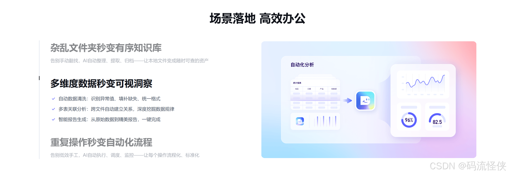

DuMate 版本进化史：从 MVP 到 v1.0.38，百度的桌面 AI 智能体走了一条什么路
DuMate（搭子）作为百度推出的桌面级 AI 智能体，从 MVP 到如今的 v1.0.38，其迭代节奏反映了团队在技能生态、安全沙箱与定价策略上的清晰取舍。本文从版本节点回溯它的成长逻辑。
现在打开 DuMate，你看到的是一个能跨应用、跨文件干活的桌面 AI 智能体——从官网到实际体验，它帮你整理文件夹、分析 Excel、自动处理邮件，甚至能通过技能广场装上第三方扩展。免费版给你每天 1000 积分，全功能可用，只是高峰时段可能要排队。这套完整的产品形态不是一蹴而就的，从 MVP 到当前的 v1.0.38，DuMate 走过了一条相当克制的迭代路。
现状：最新版它是什么样
v1.0.38 的 DuMate 已经站在了两项国际权威 Agent 评测榜单的顶端——PinchBench 和 DeepResearch Bench。这两个评测分别对应真实工作场景的任务执行能力和复杂研究任务的信息整理能力，能同时登顶，说明它不只是"能对话"的 AI，而是真正"能干活"的智能体。
它的核心能力围绕三大支柱展开：文件智能管理、多源数据分析、办公操作自动化。每个支柱背后不是单一的功能按钮，而是一整套内置技能的组合调度。安全设计上采用本地沙箱隔离运行，数据全程不外流，这一点在它的整个迭代过程中没有动摇过。
免费版的策略是当前版本最值得关注的设计——想要体验直接从官方下载渠道获取，永久免费、全功能可用、每日 1000 积分。这不是一个"阉割版"，只是用额度而不是用功能边界来区分付费与免费。积分消耗也是透明的，每个任务执行完会告诉你花了多少，还能按日、周、月汇总账单。这种定价方式在同类产品中并不算常见，后面会回到它在迭代中的位置。
来路：它从哪起步，关键转折点在哪
翻了DuMate文档，没看到 DuMate 的早期 MVP 版本细节——没有初版的功能清单，没有 v1.0.0 到 v1.0.14 之间的变更日志。这本身就是一个有意思的观察：百度对外的公开文档选择了"从相对成熟的版本开始记录"，而不是完整铺开每一步。这可能说明 MVP 阶段的核心框架搭得比较快，大的功能方向没有反复摇摆。
文档里最早能锚定的版本节点是 v1.0.15（2026 年 4 月 1 日）——这是 DuMate 正式开启计费的版本。在 AI 产品的生命周期里，这通常是一个微妙的时间点：太早收费会吓跑种子用户，太晚收费又可能陷入"永远免费"的困境。DuMate 的做法很聪明：开启计费的同时推出永久免费的个人体验版，全功能可用只是用积分额度来约束使用频率。
v1.0.15 之后，DuMate 的迭代重心明显转向了技能生态建设。
v1.0.16，技能广场上线。这是一个精选第三方技能的集散地——标签筛选、一键安装、评分评论，让用户不用写代码就能扩展 DuMate 的能力边界。从法律合同审查到小红书笔记生成，从 SQL 查询优化到旅行行程规划，技能广场覆盖了行业、效率、开发者、生活四大类场景。
但技能广场上线后并没有停在那里，接下来几个版本在持续打磨它的体验细节：
- v1.0.21，积分标识优化——让用户能快速筛选出哪些 Skill 会消耗积分
- v1.0.22，版本提醒新增——已安装的 Skill 有更新时主动通知
- v1.0.27，标签筛选增强——按场景、行业、功能标签快速定位
这四次迭代（v1.0.16 到 v1.0.27）全部围绕技能广场展开，持续了至少十几个版本号。这种"深挖一个功能而不是同时铺很多点"的节奏，和很多 AI 产品"大而全"的快速扩张策略不同——DuMate 在生态基础设施上花了不少时间。
v1.0.38，技能组合功能上线。这是一个面向团队场景的重大更新——把关联的多个 Skill 打包成一个整体，一次安装就是一整套能力。比如"数据分析组合"可以包含 Excel 处理、数据清洗、图表生成、PPT 生成四个 Skill，一个"运营新人技能包"就能让新员工快速获得全套工具。这步棋把之前积累的单个 Skill 生态串成了适合团队分发的体系。
规律：从迭代节奏看团队在死磕什么
把这些版本节点串起来，能看到几个清晰的规律。
首先，技能生态是一条持续的主线。从 v1.0.16 技能广场上线，到 v1.0.38 技能组合，中间跨越了二十多个版本号。团队没有因为要做别的事就把生态建设放一放，而是把广场的基础体验——筛选、标识、提醒——一个个打磨到位，然后才迈出"组合打包"这一步。这种"先把路修通再跑重车"的节奏，说明团队对生态的重视程度高于单一功能的短期曝光。
其次，安全底线没有动摇。本地沙箱隔离、数据不外流、授权级别可配置——这些设计从介绍文档到邮件处理的安全章节，贯穿了所有能力说明。样本文档里没有出现过"某版本放宽了安全限制"或"为了速度牺牲了隔离"的记录，这在 AI 产品中并不常见。很多产品在早期会用云端加速换取速度，后期再补本地能力，DuMate 是一开始就把本地安全作为核心卖点。
第三，定价策略相当克制。免费版不限制功能、只用积分额度约束、积分账单透明——这套设计在 v1.0.15 一次性推出后，后续版本没有看到大的调整。它不像一些产品那样频繁变动定价策略来测试用户底线，而是给了用户一个明确的"门槛在哪里"的信号。
反过来看，什么东西在迭代中没有被反复折腾？比如跨端渠道接入——文档里提到了飞书、钉钉、携程、GitHub 的连接器，也提到了硬件分身（小度智能音箱），但没有给出具体的版本号。这可能说明对外渠道的对接更多是"能力展示"而非迭代重点，团队的精力主要还是花在桌面端的核心能力和生态建设上。
预判：照这个路线，下一步大概率怎么走
从迭代规律推——这里明确说这是"从版本节奏推的，不是官方口径"。
v1.0.38 的技能组合是面向团队分发的第一步，但团队场景远不止"打包 Skill"这一件事。组合的版本集中管理、团队内的权限分级（哪些 Skill 可以用、哪些不能用）、组合的协作编辑——这些能力在当前文档里都没有提到。如果团队保持"生态基础设施要打磨到位"的节奏，下一步大概率会在技能组合的团队协作维度上继续深化。
另一个可能的方向是硬件分身的落地。扩展角色里提到了"物理设备作为搭子的分身入口"（比如小度智能音箱），但样本文档里没有给出具体进展。如果技能生态在桌面端稳定下来，硬件入口可能成为下一条扩展线。
最后一点，免费版的积分额度是每天 1000，这个数字在 v1.0.15 推出后一直没有变。如果 DuMate 的用户量继续增长、运营成本上升，免费版的额度会不会调整——这是用户侧最敏感的信号，但从当前的迭代节奏看，团队倾向于给用户稳定预期，不太会轻易动它。这套版本脉络的梳理也整理了一份参考资料，在GitHub、Gitee、GitCode三个仓库的文档目录里都能找到。
